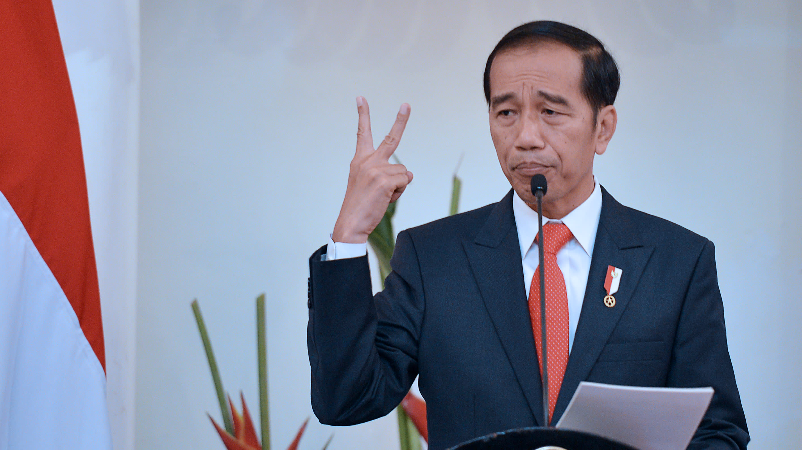

| Nama | Foto | Latar Belakang |
|---|---|---|
| Joko Widodo |  | joko Widodo, biasa disapa Jokowi, lahir di Surakarta, Jawa Tengah, pada 21 Juni 1961. Ia berasal dari keluarga yang tidak begitu sejahtera:bahkan, ia pernah mengalami penggusuran rumah beberapa kali selama masa kecilnya. Dari kondisi yang sulit, Jokowi belajar keras dan akhirnya menjadi seorang tukang kayu sebelum masuk ke dunia politik |